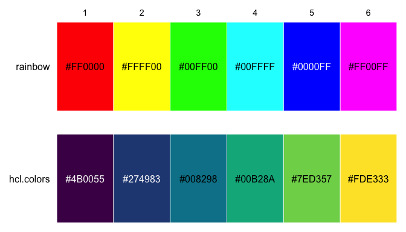
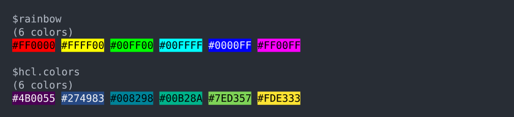
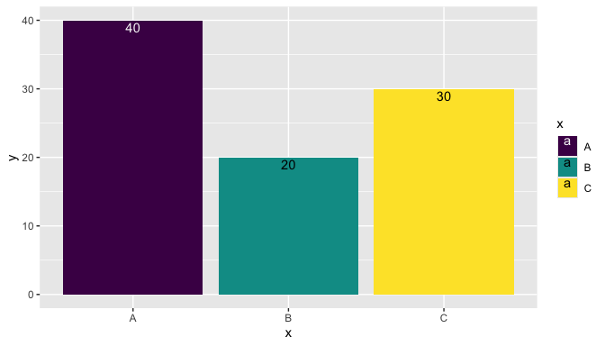
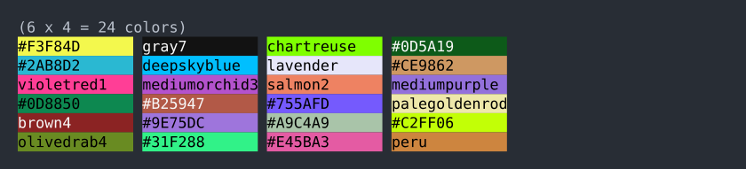

colorkit provides several utility functions for working with colors in R. There are tools for converting colors to hexadecimal strings, selecting contrasting foreground colors for a given background, randomly sampling colors, and displaying colors visually as plotted cells or printed console output.
This package is meant to complement and not compete with excellent packages like scales and farver that provide robust color manipulation tools.
Installation
You can install the development version of colorkit from GitHub like so:
# install.packages("pak")
pak::pkg_install("dmuenz/colorkit")Examples
Here are some examples of how you might use colorkit. First, load the package.
Visualizing color palettes
To visualize color palettes, you can use either plot_color() or print_color(). The former prints to the graphics device, the latter to the console. Both functions accept either a vector, matrix, or list of vectors and matrices all containing R colors. Colors can be specified using any of the standard R color specifications.
Here’s an example of plotting two palettes with plot_color().
plot_color(list(
rainbow = rainbow(6),
hcl.colors = hcl.colors(6)
))
And here are the same palettes printed to the console with print_color().
print_color(list(
rainbow = rainbow(6),
hcl.colors = hcl.colors(6)
))
For print_color() to work best, your console must support 24-bit colors; that way it can display all 2563 colors in the hex RGB color space (i.e., colors of the form "#rrggbb"). If your console does not support that many colors, then it may (depending on your platform) map each specified color to the closest printable color. print_color() is indebted to the cli package for color printing in the console.
Selecting contrasting foreground colors
In the above examples, note that some color codes are printed in black (like #FFFF00) while others are printed in white (#0000FF). The text colors were chosen by bg2fg() to provide good contrast with the background, according to the methods defined by WCAG 2.x (contrast ratio, relative luminance).
You can easily use bg2fg() for your own displays. Here’s an example of putting text within the bars of a bar plot:
library(ggplot2)
data <- data.frame(x = LETTERS[1:3], y = c(40, 20, 30))
bg <- hcl.colors(3)
ggplot(data, aes(x, y)) +
geom_col(aes(fill = x)) +
geom_text(aes(label = y, color = x), vjust = 1.2) +
scale_fill_manual(values = bg) +
scale_color_manual(values = bg2fg(bg))
Converting colors to hexadecimal strings
Occasionally it is useful to standardize the various R color specifications into hex strings. col2hex() does this, converting all colors to uppercase hex strings with either 6 or 8 hex digits, depending for each color on whether it’s opaque.
Some use cases for this are:
When programmatically creating HTML/CSS code in R, you can use R color specifications to create HTML/CSS colors. E.g., “violetred” is a valid color name in R but not in HTML/CSS, so you could generate code like
sprintf("<div style='background:%s;'></div>", col2hex("violetred")).With the
gridpackage, the drawing of raster objects can be sped up by first converting them to hex strings. See thecol2hex()help page for an example.
col2hex() is indebted to the farver package for color conversion.
Randomly sampling colors
rand_color() generates a random sample of R color strings. When the parameter hex is TRUE, the sampling is uniformly distributed over the RGB(A) color space. When hex is FALSE, sampling is uniformly distributed over distinct R color names. When hex is between 0 and 1, the sampling distribution is a mixture of those two uniform distributions. By default, hex is 0.5.
rand_color() proved useful to the colorkit package author when testing the package’s other functions. Here’s hoping it will prove useful to someone else too.
set.seed(123)
rand_color(24) |> matrix(ncol = 4) |> print_color()